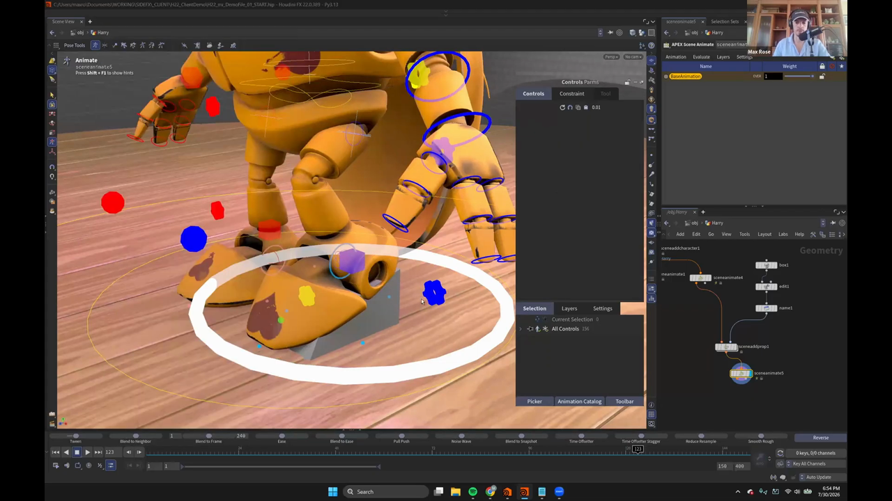
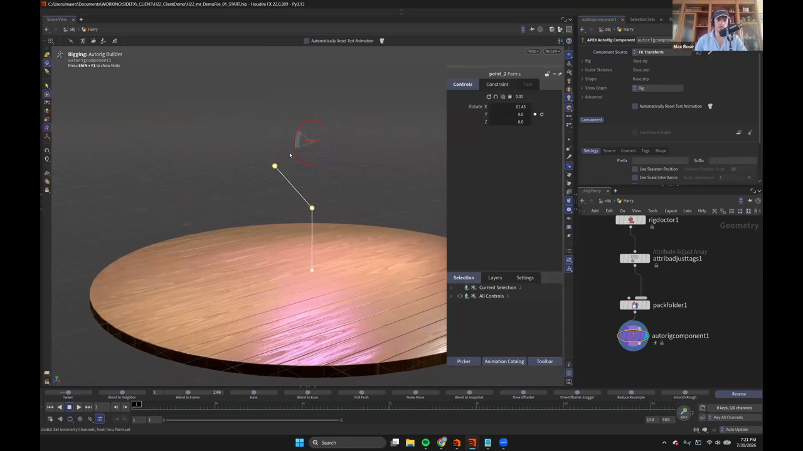

Houdini 22 KineFX アニメーション 5 — 小物を Prop として足す／3点の線から IK リグを作る
出典: Animate in KineFX | Part I | Max Rose | Houdini Illume （SideFX 公式ウェビナー / 講師 Max Rose さん / Houdini FX 22.0.389 / 1:22:20 / 英語）の Q&A 部分。 このページは、上記の動画を見ながら自分用にまとめた日本語の学習メモです。SideFX 公式の翻訳ではありません。 前回はSecondary Motion と Motion Mixerでした。
この記事で扱うこと
本編のあと30分以上にわたって質疑応答が続き、その場で実演された内容がいくつかありました。 そのうちまとまった手順として使える2つを取り上げます。
- キャラクターの一部ではない小物（靴など）を Prop として足して、体に追従させる
- 3点の線から IK リグを作る最短手順
1. 小物を Prop として足す
「ハイヒールをキャラクターの一部としてモデリングするのではなく、 小物としてシーンに置いて、その上にキャラクターを立たせたい」という質問への回答です。
Prop を作って追加する

小物自体は普通のジオメトリで構いません。動画では
Box → Edit → Name という最小構成で、くさび形のものを作っていました。
「これを靴だと思ってください」という説明つきです。
それを Apex Scene Add Prop に渡します。入力は2つです。
| 入力 | 渡すもの |
|---|---|
| 1 | キャラクターのシーン（シーン全体） |
| 2 | 作った Prop のジオメトリ |
Prop には Static / Animated / Deforming の指定があり、
どう扱うかを決められます。そのあとに Scene Animate を繋げば、
シーンの中に Prop が入った状態でアニメーションステートに入れます。
足に追従させる — 順番に注意
置いただけでは、Prop はただ置いてあるだけです。 この Prop で足の IK を動かしたいので、ステートの中で拘束を作ります。
順番をいつも忘れるのですが、child、parent の順だったと思います。
そう選んでから H を押します。
つまり動かされる側（足の IK）を先に、動かす側（Prop）を後に選んで H です。
これでハイヒールを履いたような姿勢が、その場で作れます。
講師の方も「ちょっと台本から外れますが、うまくいくか試してみます」と言いながらの実演でした。 アニメーションステートの中で簡単なリギングができてしまう、という例になっています。
おまけ — キャラクターのジオメトリを後から差し替える
質問者の本題は「キャラクター側のジオメトリも一緒に変わってほしい」というものでした。 その答えが Houdini らしくて面白かったので書き残します。
Unpack Characterでキャラクターをアンパックします- 中のジオメトリを自由に編集します （動画では Harry に歯を生やして怒った顔にしていました。symmetrical をオンにして）
- もう一度パックし直します
- 元の場所に繋ぎ直します
これだけで、新しいジオメトリがそのままリグに乗った状態になります。
これがプロシージャルということの意味です。 どこでも、いつでも、何でも変更できて、それでもちゃんと動くものが出てきます。
2. 3点の線から IK リグを作る
最後の質問は「APEX で、1本の線から動く IK リグを作る一番手っ取り早い方法は？」でした。 これに対する回答が非常にコンパクトだったので、そのまま手順としてまとめます。

まず前提として、こう説明されていました。
KineFX ではすべてがポイントです。Houdini ではすべてがポイントです。
手順
line → rigdoctor1 → attribadjusttags1 → packfolder1 → autorigcomponent1 (FK Transform)
→ autorigcomponent2 (Multi IK)Lineを置いてポイントを3つにしますRig Doctorで Initialize Transforms を有効にします。 これでポイントがジョイントになりますAttribute Adjust Tagsでタグを付けます。 Number of Entries を設定し、値をarmにしますPack Folderで APEX が理解できる形式にします。 画面のパネルでは Guide Skeleton がBase.skelになっていますAutoRig Componentを足し、Component Source をFK Transformにします。これでリグが初期化され、素朴な FK リグができます- もう1つ
AutoRig Componentを足し、今度はMulti IKを選びます - その
Drivenに、手順3で付けたタグarmを入れます
これで IK が動くようになります。
Multi IK はタグを見て対象を探すので、
手順3のタグ付けと手順7の指定が一致していることが肝です。
上の画像のパネルでは、Rig が Base.rig、Guide Skeleton が Base.skel、
Shape が Base.shp になっています。
別シリーズの APEX の回で出てきた
Pack Folder の命名規則と同じものです。
おわりに
ウェビナーの締めくくりで、司会の方がこう言っていました。
リギングのウェビナーをやってほしいという要望がとても多いので、 このシリーズはパート3、4、5 とやることになりそうです。
アセットは SideFX の Content Library から入手できるとのことでした。
この記事のまとめ
- 小物は
Apex Scene Add Propに「キャラクターのシーン」と「小物のジオメトリ」を渡して追加します - 追従させるには、アニメーションステートで child → parent の順に選んで
H Unpack Characterでジオメトリを編集し、パックし直せば、リグを組み直さずに見た目を差し替えられます- 最短の IK リグは
Line（3点）→Rig Doctor→Attribute Adjust Tags→Pack Folder→AutoRig Component Rig Doctorの Initialize Transforms がポイントをジョイントに変えますMulti IKはタグで対象を探します。タグ名（arm）を一致させます
Part I はここまでです。次からは Part II のモーションキャプチャ編に入ります。